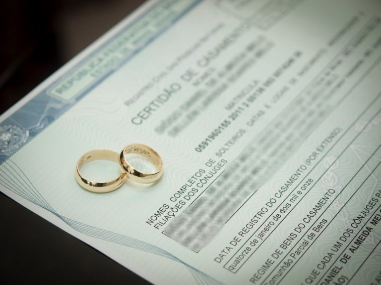

POR QUE ESCOLHER O NOSSO ESCRITÓRIO?
Especialidade
Somos Especialistas quanto ao assunto é Divórcio e Direito de Familia. Você será atendido por uma equipe de especialistas no assunto que encontrarão a melhor solução para o seu caso.
Serviço Humanizado
Trabalhos com a QUALIDADE DE VIDA E BEM-ESTAR do Cliente, compreendendo as necessidades emocionais e práticas durante o processo de divórcio, visando proporcionar suporte e orientação personalizados.
Atendimento Online
Uma das modalidades mais versáteis hoje, pensando no seu conforto e velocidade para solucionar o seu caso. Atendimento prático, rápido e eficaz.
Tenha o melhor do atendimento de onde você estiver!Alguns dos serviços que oferecemos
